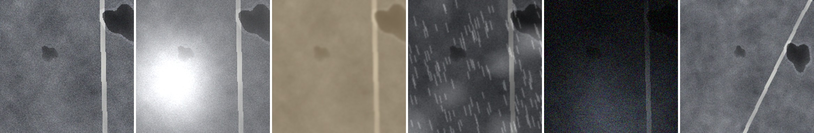
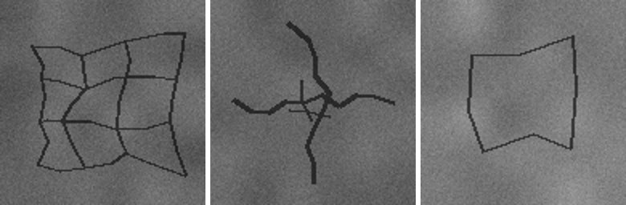
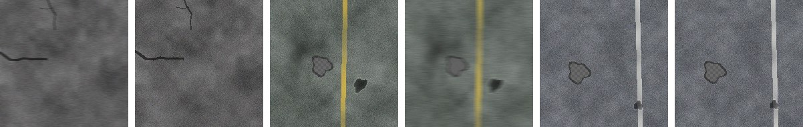

Day 1: Before any model: how the field breaks a classifier, what a label means, who drew it, and which frames may share a split
AI Engineering Track4 teaching days + capstone day4 sessions · 4 labsAE-309
The course at a glance
Four days, one system that reaches the roadside, and a capstone
Day 1 · Visual data first
How the field breaks a model, annotation and agreement, leakage by site, augmentation.
Day 2 · Backbones and transfer
Convolutional networks and transformers, how much to fine-tune, the zero-shot floor, licences.
Day 3 · Detect, segment, track
A pothole detector and its errors, a crack segmenter, vehicles counted across a line.
Day 4 · Fit the budget and release
Export, latency and size on a processor, field-condition tests, privacy and monitoring.
Day 5 · Capstone. An inspection or counting service that meets a stated budget, in a public repository, defended on a failure case the assessor picks.
How this course works
Every lab ends with a test under changed conditions
Data before models
The first model is trained on Day 2. Day 1 decides what the labels mean and which frames may meet.
Slices and intervals
No result is one number. It is a table by lighting, weather and district, with an interval on each cell.
Short schedules
Each lab starts from a supplied checkpoint and trains for minutes, on a free notebook GPU or a laptop processor.
AI policy. AI off in the supervised checks and in labs 1.2 and 3.2. Elsewhere an assistant may explain code and errors, not write the pipeline. In the capstone, anything goes.
One case study all week
Al-Manar's roads department and its system, Rasid
A fictional city. Survey vehicles film the road surface, pole cameras watch the traffic. You build Rasid (راصد), which finds road damage and counts vehicles.
Road frames
6,000 frames from 300 road segments in five districts: potholes, cracks, patches, under five kinds of light.
Traffic clips
Twelve clips with ground-truth tracks and counts: day, queue, a gantry, night.
A roadside unit
A two-core processor, no accelerator, a metered link. The model must fit its budget.
The data
One road spot, five kinds of light and a moved camera

Left to right: day, glare, dust, rain, night, and the same spot from a pole camera. Synthetic frames from the course generator.
Lab environment
Open Colab, or use uv on a laptop, and run the setup check
Colab: open a lab from the course page. Its first cell clones the repository and installs what Colab lacks.
Run 00_setup_check.ipynb. It draws the data pack once, a few minutes.
Each lab starts from a supplied checkpoint and the supplied split. No lab needs an earlier one.
git clone https://github.com/SDAIAAcademy/ae-309
cd computer-vision/labs
uv syncexport CV_QUICK=1 # the quick mode for a processor
uv run jupyter lab
Today
Visual data first
Session 1 · How vision systems fail in the fieldA pilot classifier that scores well in daylight fails on the road: accuracy by lighting, blur and viewpoint
Session 2 · Annotation guidelines and agreementBoxes, masks and their formats; a guideline that two people can follow; agreement as a number
Session 3 · Leakage by site and near-duplicatesFrames of one road spot look alike: a random split puts them on both sides and inflates the test score
Session 4 · Augmentation and what it assumesEvery augmentation claims that a change does not matter: some claims are false for a road defect
Session 1
How vision systems fail in the field
Name the conditions a roadside camera meets that a survey set does not
Break one accuracy number into slices by lighting, blur and viewpoint
Write a failure note that names the worst slice and its size
01
The pilot
A classifier that passed its test and was about to ship
Trained on crops from the survey vehicle: clean daylight, a sharp camera
Five classes: clear, pothole, longitudinal crack, transverse crack, patch
Validated on held-out crops of the same kind
Next step in the plan: the roadside units
95.5%
accuracy on survey-style validation crops (lab 1.1, 156 crops)
The same model, the field
On 200 crops as the roadside sees them, it is right less than half the time
Day88%
Glare65%
Night34%
Rain18%
Dust12%
Lab 1.1: 200 field crops, 31 to 47 per lighting condition. Overall accuracy 43%.
Distribution shift
The field differs from the survey in three ways
Corruption
The same scene, a worse picture: glare, dust, rain, night, motion blur, a dirty lens.
Viewpoint
The same road from elsewhere: a pole in place of a vehicle changes scale and angle.
Population
Other roads: a district with older asphalt, other markings, defects the survey never met.
Each has its own test. Corruption and viewpoint can be imitated on frames you already have. A new population can only be collected.
The method
Slice before you average
defby_slice(rows, correct, key):
out = {}
for value insorted({r[key] for r in rows}):
hit = [c for r, c inzip(rows, correct)
if r[key] == value]
out[value] = (len(hit), float(np.mean(hit)))
return out
Every test item carries metadata: lighting, blur, viewpoint, district
The result is count and score per value, never the score alone
A small slice is a reason to collect, not a finding
Reading errors
Could a person name the defect in this crop?
Yes, and the model cannot
The model has not seen the condition. Data, augmentation or fine-tuning can fix it.
No, nobody can
The information is not in the picture. Only the camera, the lighting or the time of capture can fix it.
Look at sixteen errors of the worst slice before you plan anything. Five minutes of looking decides which of the two you are facing.
Reporting
A failure note is three lines: promised, found, asked
Line
From lab 1.1
Promised
95.5% on survey-style crops: clean daylight, vehicle camera
Found
43% on 200 field crops; worst slice dust, 12% on 40 crops
Asked
Do not deploy. Label crops under dust, night, rain and glare and from pole cameras; report every later model by these slices
Checkpoint
Where do you look first?
A crack classifier scores 94% on its validation set. On 300 crops from roadside cameras it scores 61%. What do you do first?
Train a larger backbone on the same training crops
Report the average of the two numbers as the expected accuracy
Break the 300 crops down by lighting, blur and viewpoint, with counts
Add every augmentation available and retrain
Why. The gap says the field differs from the validation set. Slices say how, and each cause has a different fix.
Lab 1.1 · 25 min
Errors by condition
Run the pilot classifier on 200 field crops and sort its errors by lighting, blur and viewpoint.
A wrong convention does not raise an error. It trains a detector on boxes that are somewhere else. Draw ten boxes on their images after every conversion.
A new class
The inspectors want a class the old labels never had
Alligator cracking: cracks that join into a pattern like crocodile skin. It means the road base is failing, and a patch will not hold.
In the old labels each such area was filed under one of the two crack classes, more or less at random.

Clearly alligator cracking; two cracks that cross; one closed cell. Which of the last two counts?
Guidelines
A guideline is written so that two strangers agree
A definition that can be checked: something to count or measure, not a resemblance
Positive and negative examples, with the nearest wrong class beside each
The borderline cases named and decided: cut by the edge, partly hidden, two classes at once
How to draw: how tight a box, where a mask ends, the smallest object worth a label
What to do when unsure: a flag, never a guess
Agreement
Raw agreement flatters a rare class
Two annotators, 100 crops, a class that appears in about 5.
Each says "no" to about 95
They agree on about 90 by saying "no" alike
Raw agreement: 90%, and they may not agree on one positive
One rule that can be counted moved kappa from 0.44 to 0.85
Guideline v1
"Cracks that join into a pattern like crocodile skin."
0.44
kappa, 9 disagreements in 30 crops
Guideline v2
"Interconnected cracks that enclose at least three closed cells."
0.85
kappa on the second pass
Label noise
Annotators can agree on what and still disagree on where
After v2 the two annotators box the same crops
One hugs the cracks, one leaves a margin: mean IoU 0.71 between their boxes
A detector cannot be more consistent with the labels than the labels are with themselves
Label noise has kinds. A wrong class, a loose or shifted box, a missing object. Each one costs a different metric, and an agreement check on a sample is how you find out which you have.
Checkpoint
What does a low kappa call for?
Two inspectors label 200 crops for "edge break". Raw agreement is 88%, Cohen's kappa is 0.31. What is the next step?
Read the crops they disagree on and rewrite the definition
Accept the labels, since they agree on 88% of crops
Add a third inspector and take the majority vote
Ask both to label the 200 crops again, more carefully
Why. A kappa of 0.31 says agreement is barely above chance. The disagreements show what the guideline failed to decide.
Lab 1.2 · 25 min
Agree on a new class
Annotate 30 crops for the new class, alligator cracking, with a partner, compute agreement, revise the guideline and measure again. AI assistants stay off.
Raw agreement and Cohen's kappa with your partner 6 min
Read the disagreements and write the rule that settles them 6 min
Kappa on the second pass and overlap of the boxes 5 min
✱ Stretch: Score each annotator against the adjudicated labels
Session 3
Leakage by site and near-duplicates
Find near-duplicate frames with a difference hash
Split by road segment so that no segment is shared
Report how much a leaking split inflates a score
03
Near-duplicates
The survey vehicle films every spot several times

Three pairs found by a difference hash in lab 1.3. Each pair is one road spot on two passes.
Leakage
A split drawn frame by frame puts one spot on both sides
150 of 274
near-duplicate pairs straddle the inherited split (lab 1.3, 1,200 frames)
The model is tested on pictures it has, in effect, already seen
The test score rises, and the rise is not skill
The better a model memorises, the more it gains
Finding them
A difference hash turns a frame into 256 bits
1 · Shrinkgrey, 17 by 16 pixels
→
2 · Compareis each pixel brighter than its left neighbour?
→
3 · Countbits that differ between two frames
→
4 · Threshold30 bits or fewer: a near-duplicate
What it finds and what it misses. The same spot in the same light, shifted by a pixel or two: found. The same spot at night, or shifted by a car's width: missed.
The repair
Split by road segment, and every frame of a segment moves together
defsplit_by_segment(seg):
return ["drop"if s isNoneelse segment_split(s)
for s in seg]
The split is a function of the segment id, never of the frame
It does not rely on the hash having found every duplicate
A frame whose segment is unknown is dropped: it is safe on neither side
Evidence
The split report states what is shared: nothing
Split
Frames
Segments
Train
780
44
Validation
130
7
Test
164
9
Dropped, segment unknown
126
Segments in more than one split
0
Near-duplicate pairs across splits
0
The price
The leak was worth 33 points to a model that learnt nothing general
Inherited split63%
Split by segment30%
A one-nearest-neighbour classifier on 16 by 16 grey pixels: it answers with the label of the most similar training crop. It can only memorise. (Lab 1.3, quick pack.)
A leaking split rewards the wrong model. It ranks memorisers above models that generalise, so it misleads every choice made with it.
Checkpoint
Why did the score fall?
A crack classifier scores 96% with a random split of frames and 81% when whole road segments are held out. Nothing else changed. Which number do you report to the department?
96%: a random split is the standard way to evaluate
The mean of the two, about 88%
Neither: the model got worse and must be retrained
81%: it is the score on roads the model has not seen
Why. The department will run the model on new roads. Only the split by segment tests that; the other 15 points were memory of near-duplicate frames.
Lab 1.3 · 25 min
Split by road segment
Find near-duplicate frames, give frames without a segment the segment of their duplicates, re-split by road segment and write the split report.
One false claim took crack accuracy from 95% to 76%
Safe pipeline95%
Quarter-turned copies76%
A probe on frozen features, trained on 240 crops plus one augmented copy of each, scored on 37 validation crops of the two crack classes. (Lab 1.4, quick pack.)
Nothing failed loudly. The training ran, the loss fell. Half of the copies of each crack class showed the other class under the old label.
Choosing
Choose augmentations from the conditions the field will bring
Start from the failure table
Session 1 said: dust, rain, night, blur, pole cameras. Augment towards those: exposure, haze, noise, motion blur, scale and small rotations.
Then check each claim
Which label could this transform change? How often does it? Measure on a sample with masks before it enters the pipeline.
Imitation is not the condition. Darkened daylight is not night. Augmentation narrows the gap; the field test on Day 4 says by how much.
Checkpoint
Which transform breaks this label?
A new class, "faded lane marking", is defined as paint that has lost most of its brightness against the road. Which augmentation is unsafe for it?
A left-right mirror
Strong random brightness and contrast changes
A shift of a few pixels in any direction
A rotation by a few degrees
Why. The class is defined by contrast. A transform that changes contrast at random can make a fresh marking look faded and a faded one look fresh.
Lab 1.4 · 25 min
Augment without changing labels
Build an augmentation pipeline for crops with masks, measure the label-change rate of six transforms and find the ones that change what a label means.